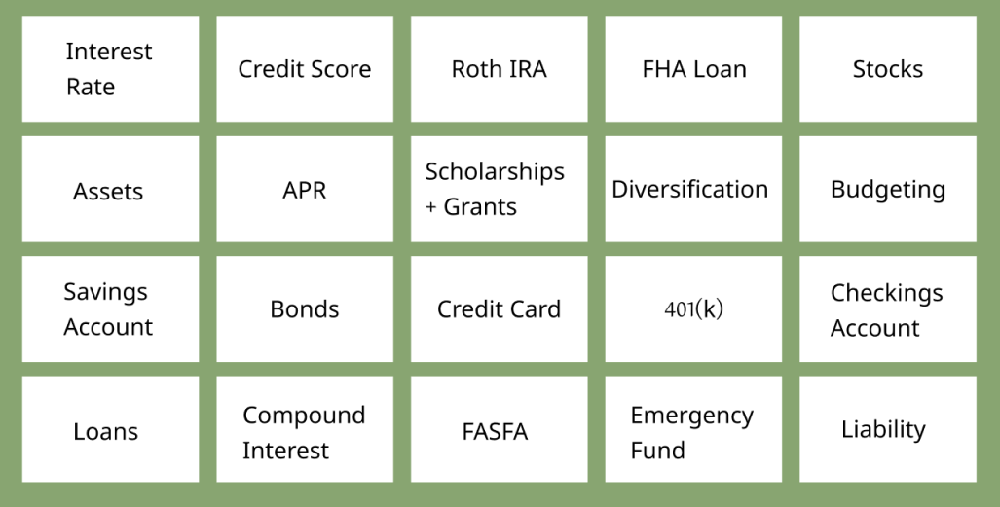

Project Description
In class project to develop a prototype based on our own interest topic
Tools
Figma
Google Workspace
Duration
Timeframe: 10 Weeks
September 2023 - December 2023
Brief
INVESTENSE, initially sparked by my interest in the revamped 2024 FAFSA. Diversed from that path and highlights the gap in financial education among college students. Recognizing the critical role of financial literacy in effective money management for students, the project aimed to develop a user-centered solution. I focused on designing an intuitive and informative platform providing users with essential financial knowledge and tools, as well as the ability to simulate investing with real world data.
Problem Statement
Only 57% of adults are financially literate, and 73% of teens want a more personal finance education
Project Goals
1. Allow users to choose and personalize their financial education
2. Create an intuitive educational layout where users will get the most of their time with the platform
3. Develop a beginner friendly investment simulator for individuals wanting to learn about investing
Timeline

Targe Audience
Young adults and College Students who are interested in bettering their financial education
Solution

Research
I aimed to gather a diverse range of responses to gain a comprehensive understanding of the services my platform will offer. To achieve this, I utilized a combination of research methods, including both qualitative and quantitative approaches. From conducting interviews, organizing card sorting activities, and distributing surveys.
Survey Findings
• The topic of most interest was investing with 29/41 respondents being interested, followed by credit and loans.
• Respondents generally feel less informed about the different types of financial resources available to them when they were college students, with most rating themselves as 2 or 3 out of 5. With no respondents choosing 5
• Many respondents have some college or an associate's degree, and a significant portion are students. With a few already being graduated or unemployed
Card Sort
The aim of this card sorting exercise was to gain insights into how individuals categorize various financial terms they encounter during financial discussions, learning, or comprehension.
By examining the categorization tendencies of individuals with varying levels of financial knowledge, I can better tailor my platform to address their preferences and prioritize specific subject areas within the realm of finance.
Card Sort Findings
• RothIRAs and 401(k) were always grouped together as well as Scholarships/grants and FASFA
• participants usually made four to six different categories
• Many individuals were confused on terms like diversification, bonds, and FHA
Interviews
The aim was to delve into participants' financial circumstances, their emotional perspectives on financial matters, and how they perceive the intersection of finances and college life.
I focused on uncovering the complex relationship between financial well-being and the college experience in order to understand not only the financial aspects of participants' lives but also their underlying emotions and attitudes.
The insights gathered from these interviews helped me develop a more comprehensive understanding of the challenges, concerns, and aspirations of individuals in managing their finances while pursuing higher education; and will assist in shaping features and solutions that cater to the platform I plan on developing.
Insights
• College students have no idea where to start with their finances or already have a steady understanding
• Many individuals are interested in investing, but aren't sure where to start
• Not many people know where to find these financial resources
Ideas
• Create a way users can learn how to invest while making it fun and intuitive
• Filtering and user personalization
• Ability for users to choose the topics they want to learn
MuSCoW
I created a MuSCoW chart to determine the final features that the platform should include

Persona

User Journey

Sketches

User Flows

Wireframes

User Testing
The testing was the prototype was done in person faec to face, participants were presented the prototype with sessions being recorded. The feedback for the tests helped me have a better understanding of what changes needed to be made. Many participants noted that the investing portion was still difficult to comprehend and navigate.
The total average success rate of participants and task completion is 87.5%

Reflections
This was my first time going through the whole UX design process and it is evident that the platform requires further development and refinement, focusing on its content, interactions, and minor user interface elements to enhance the user experience.
Looking ahead, I will make sure to have a better understanding of the problem statement I want to design for as well as the UX elements to implement to reach that goal.
In terms of this project, the primary focus will be to tailor the platform to better serve college students, addressing their diverse academic needs. As, during the development I felt the platform stranded away from its initial intentions. Additionally, there's a need to revamp the simulation page, making it more accessible and user-friendly for newcomers. Exploring various methods to integrate simulations effectively into the platform will also be a key area of development.